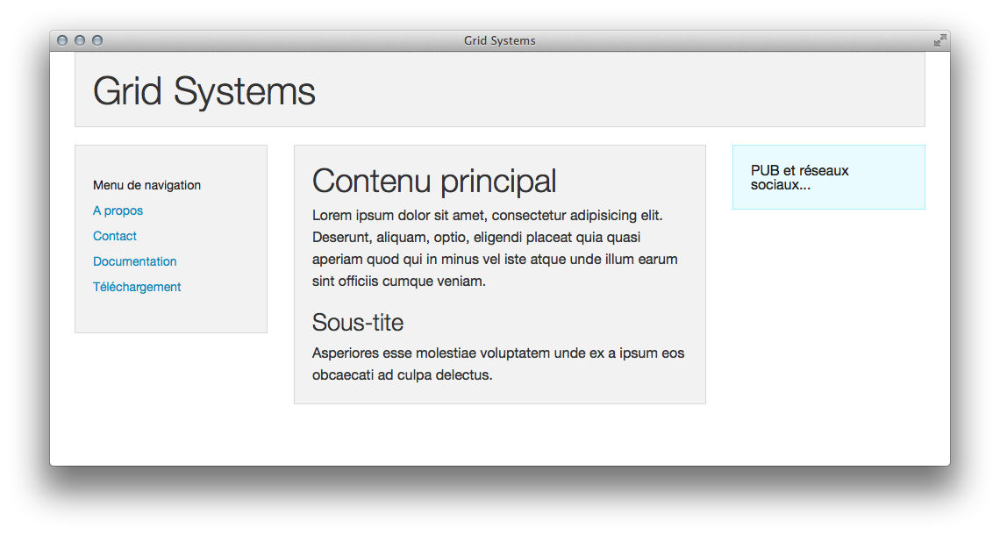
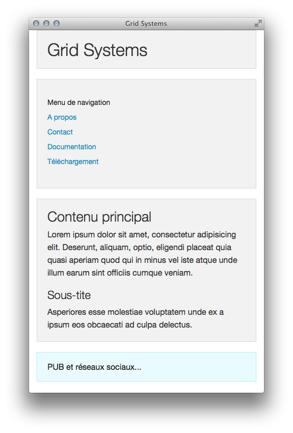
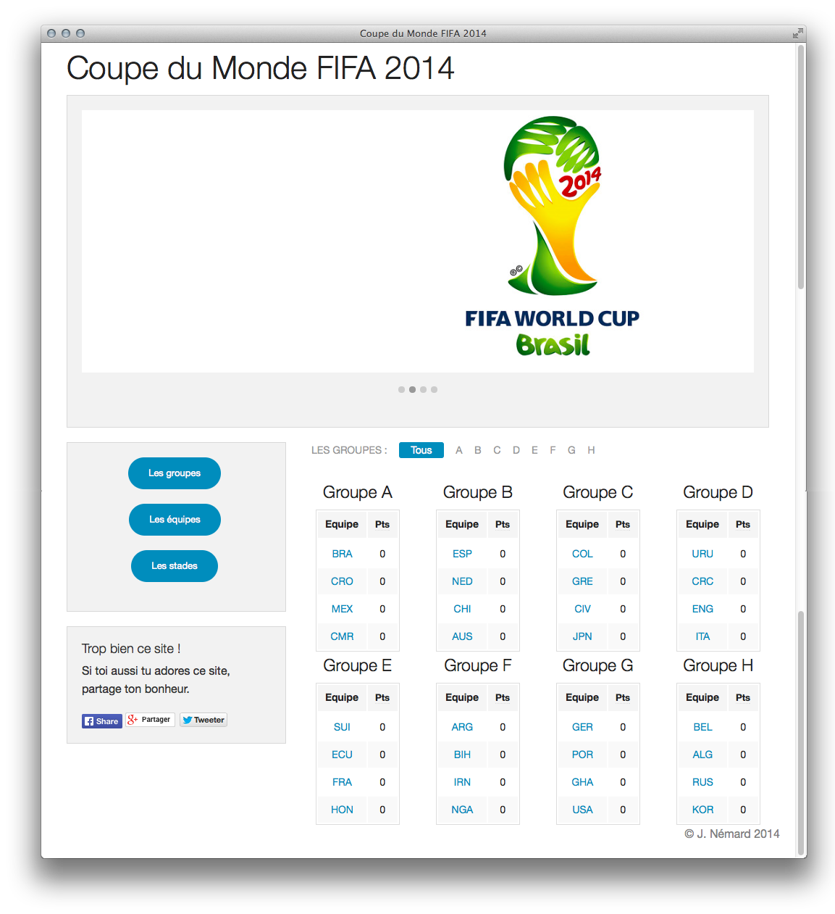
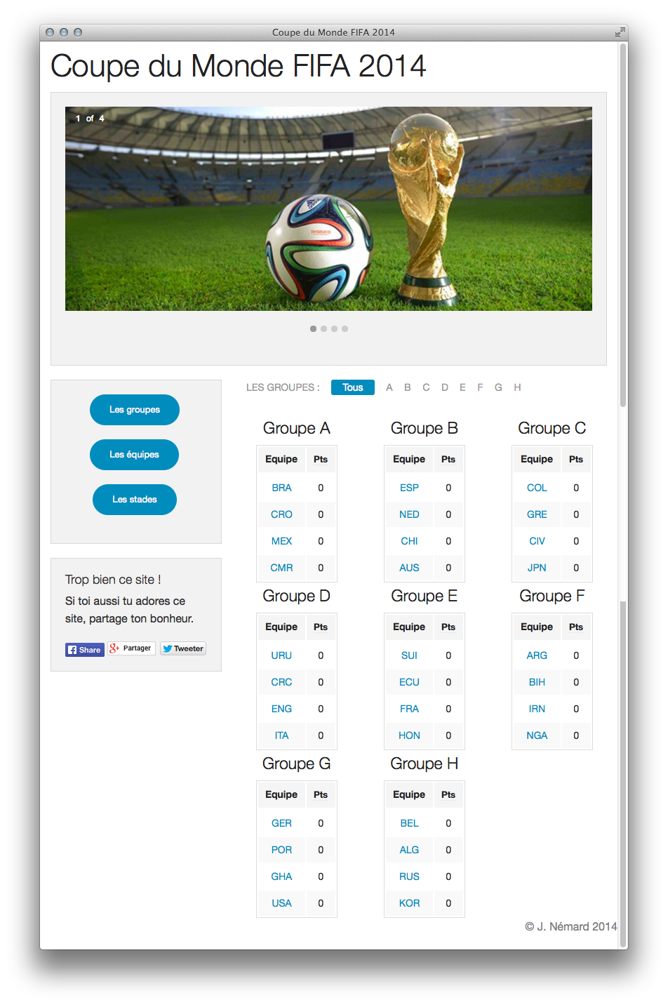
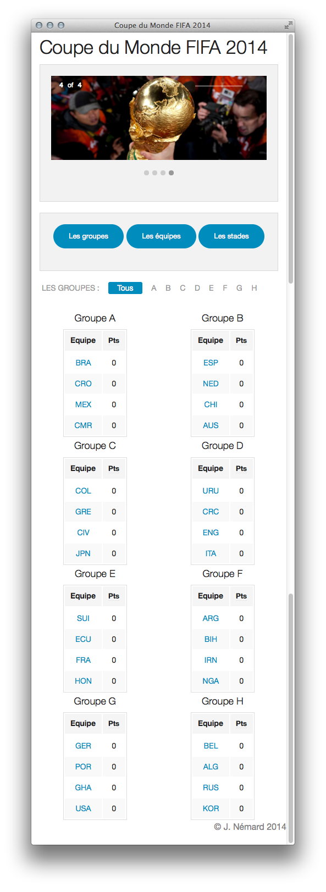

Responsive Design
- TP n°1 - Info-Web - Licence 3
- HTML5 et CSS3
- Utilisation d'un framework front-end
- Zurb Foundation
Le but de ce TP est de se familiariser avec les techniques actuelles de création de pages web faisant appel aux dernières versions des standards du Web (HTML5, CSS3) et aux nouveaux modes d'utilisation, via des terminaux plus petits (tablettes, smartphones).
Les sites Web doivent non seulement s'adapter à des largeurs d'écran variable mais pour être efficace cette adaptation doit être pensée dès l'étape de conception (le design) du site.
Ainsi on parle de Responsive design pour ces sites qui s'adaptent à la largueur d'écran (et a d'autres attributs propres aux mobiles). On parle également d'un mode de conception Mobile First dont l'idée est de concevoir en premier lieu les sites pour les plateformes mobiles, puis d'adapter les règles de mise en page pour les navigateurs plus larges (les desktops).
Grid System
Dans un site web, la mise en page des différents éléments (panneaux central, menu de navigations, panneaux de pub sur le coté, ...) avec le CSS est fastidieuse sans l'utilisation de quelques règles de design.
On ne conçoit plus de site Web sans s'aider d'outils qui facilitent la mise en page: les grid systems.
Ceux-ci divisent la page en lignes et colonnes aux-quelles on fait référence dans le document HTML avec les attributs class des éléments.
Ainsi une division classique avec un titre en haut, un contenu central large et une colonne sur chaque cotés, pour la navigation et les liens pourra, s'écrire simplement :
<div class="row">
<div class="large-12 columns">
<h1>Grid Systems</h1>
</div>
</div>
<div class="row">
<div class="large-3 columns">
<div class="panel callout">Menu de navigation...</div>
</div>
<div class="large-6 columns">
<div class="panel">Ici le contenu principal de mon site...</div>
</div>
<div class="large-3 columns">
<div class="panel">PUB et réseaux sociaux...</div>
</div>
</div>Sur un écran large ce code pourra donner ceci :

Sur un écran plus petit ce même code donnera automatiquement un agencement adapté à la taille pour faciliter la lecture :

Les Front-End Frameworks
En français ? Les guides pour le développement coté client...
Beaucoup d'outils sont à la disposition des développeurs pour mettre en place le Responsive Design :
- Zurb Foundation
- Twitter Bootstrap
- Cool kitten
- inuitcss
- Blueprint
- Less Framework
- Grumby
- Maxmertkit
- ...
On choisi (presque) arbitrairement d'utiliser Foundation pour ce TP.
Les grilles de Foundation
Foundation définie un système de grille avec un nombre indéfini de lignes et exactement 12 colonnes. un élément occupant toute la largeur autorisée de la page occupera ainsi 12 colonnes. Un tel objet aura un attribut class indiquant cette taille.
Foundation utilise un préfixe pour identifier 3 tailles possible d'écrans (ou de fenêtres) :
- large (écrans supérieur ou égal à 1024 pixel de largeur)
- medium (écrans entre 640 et 1024 pixels de large)
- small (écrans inférieurs à 640 pixels de large)
Considérons l'exemple :
<div class="row">
<div class="large-6 columns">
</div>
</div>L'élément interne interne occupera 6 des 12 colonnes disponible dans la ligne (row) dans le cas d'un écran large (≥1024 pixels). Dans le cas d'un écran plus petit, le comportement par défaut est de maximiser la largeur des éléments et celle-ci fera 12 colonnes et occupera tout l'espace.
On peut spécifier une taille pour l'élément (nombre de colonnes) pour chacun des cas de figure :
<div class="row">
<div class="large-6 medium-8 columns">
</div>
</div>Ici, l'élément fera 6 colonnes de large dans un grand écran, 8 dans un écran moyen, et il utilisera toute la largeur sur un petit écran. Notons que l'on n'écrit pas small-12 car c'est le comportement par défaut.
Bon à savoir : si on alloue plus de colonnes que la ligne n'en contient (12), les éléments vont continuer à s'afficher sur la ligne suivante. Ainsi :
<div class="row">
<div class="large-6 columns">...</div>
<div class="large-6 columns">...</div>
<div class="large-6 columns">...</div>
<div class="large-6 columns">...</div>
<div class="large-6 columns">...</div>
<div class="large-6 columns">...</div>
</div>Ce code va s'afficher sur trois lignes.
Le TP
On veut réaliser un site web permettant l'affichage des différentes données relatives à la coupe du monde de football de la FIFA de 2014. On s'intéresse aujourd'hui à un affichage des différents groupes et des équipes qui les composent.
On cherche à reproduire le site comme montré ci dessous en utilisant le framework Foundation. Pour y parvenir une consultation intensive de la documentation en ligne du framework est indispensable.
Il faut tout d'abord télécharger le framework en suivant les instructions. D'une manière générale toute l'information nécessaire pour faire le TP se trouve dans la documentation en ligne : http://foundation.zurb.com/docs/.
Pour commencer le TP il faut partir du template de page donné dans l'archive de Foundation que vous avez téléchargée.
Les composants de la page
La page que l'on cherche à reproduire est composée de plusieurs parties qui sont toutes adaptées aux 3 tailles d'écran possibles.
Le carrousel
En Haut se trouve une division de la largeur de la page (quelque soit la largueur). Dedans y défilent automatiquement des images. Foundation possède un carrousel (Orbit Slider). LEs images suivantes peuvent être utilisées ci nécessaire : Images
Le menu de navigation du coté
Il permettra plus tard de naviguer vers d'autres parties du site. Pour l'instant ces 3 boutons ne mènent qu'à cette page. Cette division mesure 4 colonnes de large en mode medium et large. elle occupe toute la page en mode small et ses boutons s'alignent alors horizontalement.
Partage sur les réseaux sociaux
Cette section à la suite du menu de coté se comporte de la même manière que ce dernier pour les modes medium et large mais elle disparaît en mode small. Foundation possède un mécanisme pour définir la visibilité d'un élément en fonction du mode.
Les différents réseaux sociaux mettent à disposition des développeurs de la documentation très détaillée pour pouvoir insérer un bouton de "partage" dans votre page.
Le Cadre central
Il est composé de 8 éléments, un par groupe. chaque groupe possède un tableau.
- En mode
large4 groupes sont affichés par ligne. Puis qu'il y a 8 groupes, cela fait 2 lignes exactement. - En mode
mediumon affichera 3 groupes par ligne. Il y aura donc une 3ème ligne avec uniquement 2 groupes. Par défaut, l'affichage n'est pas bon. A vous de régler ce problème. - En mode
small, 2 groupes par ligne, facile.
Les groupes sont :
- Groupe A
- BRA
- CRO
- MEX
- CMR
- Groupe B
- ESP
- NED
- CHI
- AUS
- Groupe C
- COL
- GRE
- CIV
- JPN
- Groupe D
- URU
- CRC
- ENG
- ITA
- Groupe E
- SUI
- ECU
- FRA
- HON
- Groupe F
- ARG
- BIH
- IRN
- NGA
- Groupe G
- GER
- POR
- GHA
- USA
- Groupe H
- BEL
- ALG
- RUS
- KOR
Taille d'écran large

Taille d'écran medium

Taille d'écran small
